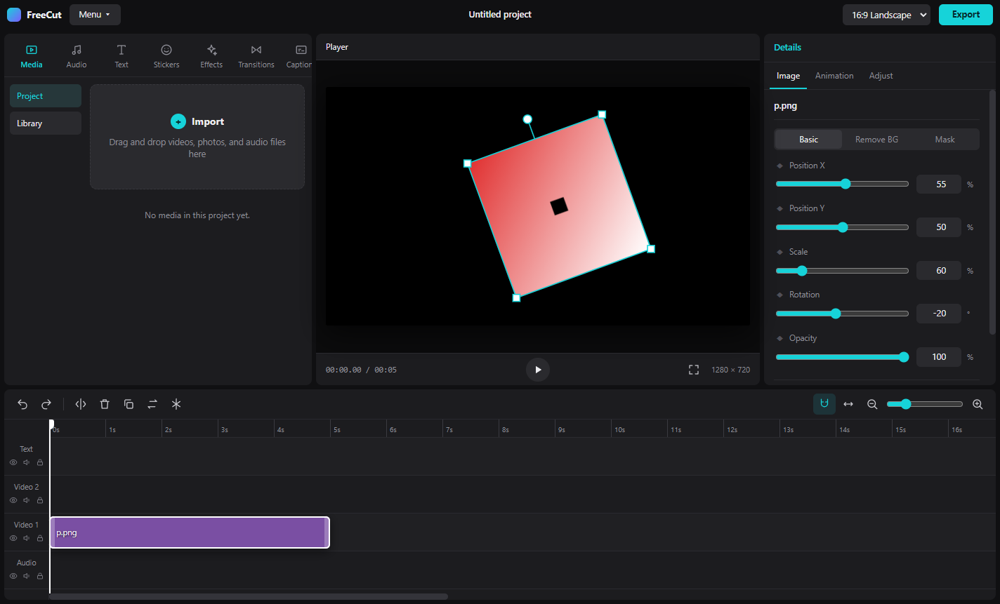

A CapCut-style editor with keyframes, captions, colour grading and AI background removal. No paywall, no watermark, no account. Everything runs on your PC.
Free forever. If it saves you a sub, buy me a coffee ☕.
Windows 10/11 · about 185 MB · open source (MIT)

The "pro" stuff is just included.
Video, text and audio tracks, snapping, drag-and-drop, split, copy/paste, undo/redo and a right-click menu.
Animate position, scale, rotation and opacity. Speed curves, reverse and freeze frames.
Grab clips right in the player to move, scale and rotate them, with snap-to-centre guides.
Curves, HSL, colour wheels, temperature, tint, highlights and shadows, plus saveable presets.
Fonts, gradients, glow, outlines, boxes, typewriter and wave animations, and style presets.
Speech-to-text with Whisper, running locally. Styled captions straight onto the timeline.
Cut people out of photos and video without a green screen. Chroma key and masks too.
Clip transitions, shake, pulse, glitch, RGB split, stabilise, and blur in several strengths.
A permanent media library for every project, autosave, and reopen any project from the home screen.
Yes. No paywall, no watermark, no account, no ads. It's open source under the MIT licence.
Code-signing certificates cost money, so the installer is unsigned and SmartScreen flags anything it hasn't seen much. The full source is on GitHub if you want to check it or build it yourself.
No. Editing, captions and background removal all run on your PC. The AI models are downloaded once the first time you use those features.
Export runs in real time, so a 5 minute video takes about 5 minutes. The best-quality AI background removal is slow on CPU. There's no cloud content or CapCut project import.